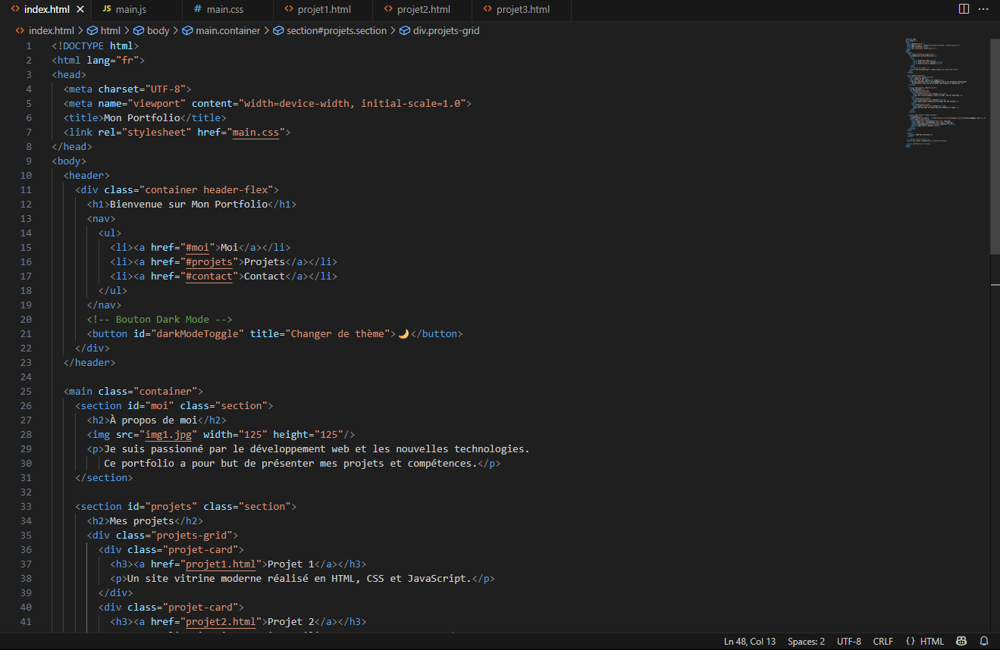

Présentation du projet
Ce projet est une application web interactive qui récupère et affiche des données provenant d’une API externe. L’objectif était de comprendre comment utiliser fetch() en JavaScript pour interagir avec un service externe et mettre à jour l’interface utilisateur en fonction des données reçues.
Grâce à ce projet, j’ai pu apprendre :
- À faire des requêtes HTTP en JavaScript
- À manipuler des données JSON
- À afficher les résultats dynamiquement dans le DOM
Aperçu de l’application
Voici un exemple d’affichage des données récupérées depuis une API :
(Remplace cette image par une capture d’écran réelle de ton application)
Exemple de code utilisé
Voici un extrait du code utilisé pour récupérer et afficher des données depuis une API :
fetch("https://api.exemple.com/data")
.then(response => response.json())
.then(data => {
const container = document.getElementById("resultats");
container.innerHTML = "";
data.forEach(item => {
const p = document.createElement("p");
p.textContent = item.nom;
container.appendChild(p);
});
})
.catch(error => console.error("Erreur :", error));
Le code ci-dessus fait un appel à une API, convertit la réponse en JSON et affiche chaque élément dans une liste.
Fonctionnalités principales
- Appel à une API externe pour récupérer des données en temps réel
- Affichage dynamique des résultats dans la page
- Gestion des erreurs si l’API ne répond pas
- Interface simple et responsive
Conclusion
Ce projet m’a appris à interagir avec une API en JavaScript et à manipuler des données JSON. Il constitue une première étape avant de travailler avec des APIs plus complexes et d’intégrer des fonctionnalités comme la recherche ou les filtres.